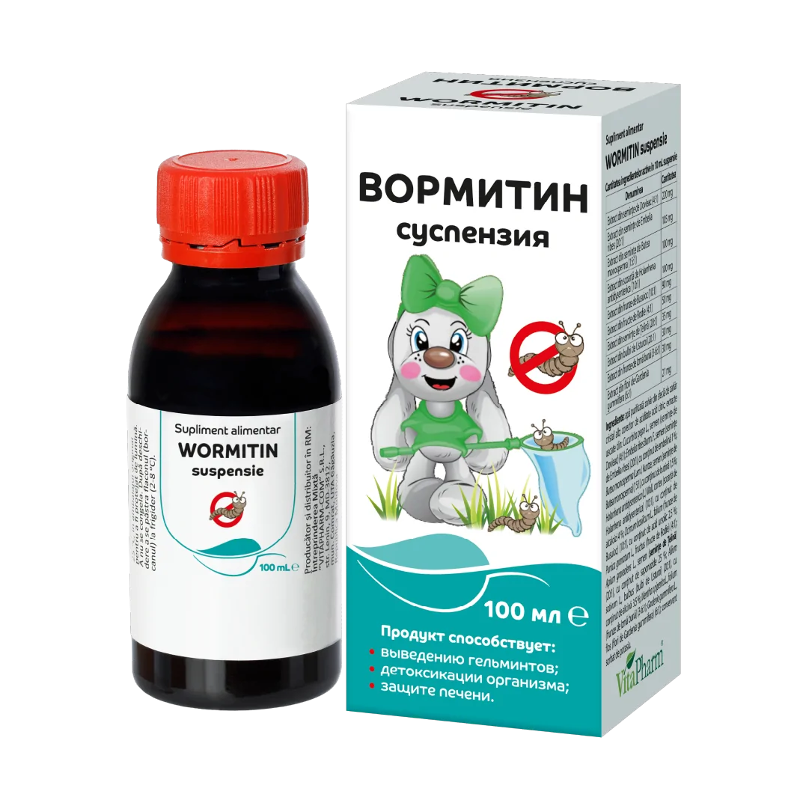

Complex vegetal din 10 extracte pentru eliminarea completă a helminților și ouălor acestora. Curăță, protejează și regenerează sistemul digestiv.
Conține cucurbitină care paralizează musculatura helminților (oxiuri, ascaride, tenie), facilitând eliminarea lor.
Acțiune fatală asupra viermilor inelari și plați. Curăță ficatul și sângele, fiind un antioxidant puternic.
Antibiotic natural care dereglează metabolismul helminților, făcându-i neviabili. Elimină spasmele și colicile.
Normalizează digestia, neutralizează toxinele și elimină meteorismul (balonarea) cauzat de paraziți.
Proprietăți antidiareice și coleretice. Eficiente în profilaxia infestării repetate cu paraziți intestinali.
Efect laxativ natural pentru eliminarea rapidă a paraziților și acțiune antibacteriană în infecții intestinale.
Se administrează oral, cu 1 oră înainte de masă. A se agita bine!
| Copii 1-3 ani | 2,5 ml suspensie de 2 ori/zi |
| Copii 4-6 ani | 5 ml suspensie de 2 ori/zi |
| Copii 7-11 ani | 7,5 ml suspensie de 2 ori/zi |
| Copii 12-18 ani | 10 ml suspensie de 2 ori/zi |
| Adulți | 10-15 ml suspensie de 2 ori/zi |